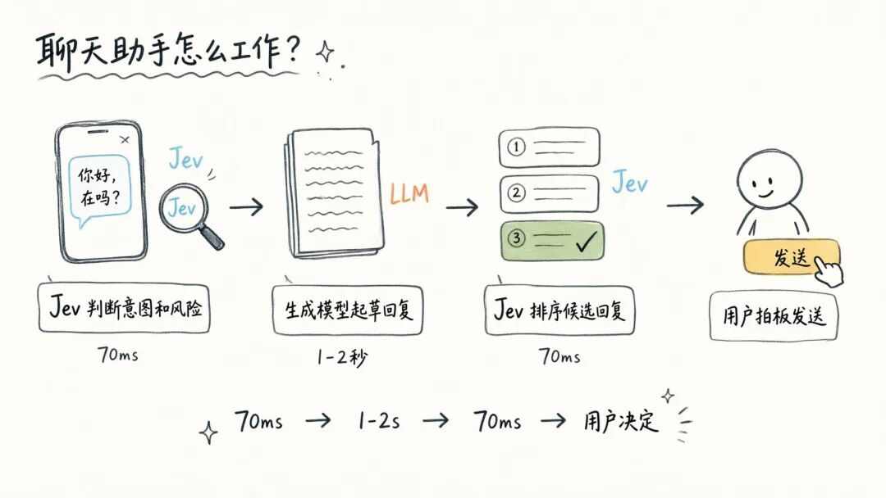
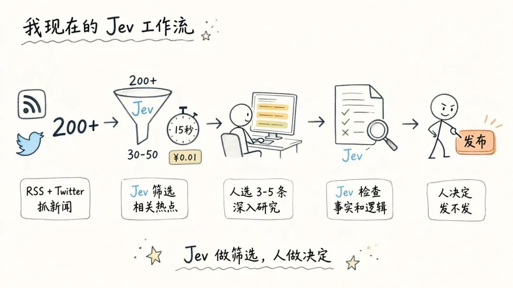

用 Jev 做了一周判断，我放弃了让它「帮我做决定」
一周前，Jev 刷屏的时候，我也跟着注册了账号。
和大多数人一样，我最初的想法很直接：既然这个模型又快又便宜，能不能让它帮我做一些日常决策？
比如，今天该写哪个选题？这篇草稿要不要发？用户反馈里哪些是真的痛点、哪些只是噪音？
试了一圈下来，我的结论可能有点扫兴：
Jev 不适合「帮我做决定」，但它特别适合「帮我做筛选」。
这个区别，是我花了一周时间、踩了几个坑之后才搞清楚的。
第一个坑：让它选选题，它给了我一堆正确的废话
我最开始的用法，是把最近收集的 30 个热点丢给 Jev，让它打分：哪些值得写成文章。
我 prompt 写得很详细：考虑时效性、读者兴趣、和我的账号定位是否匹配。
结果它给了我一个 Excel 表格，每个热点都有分数和理由。
我一看，排名前三的确实是热点。但问题是，这些我也知道。
而且它选出来的「高价值选题」，有几个其实我已经写过类似的了，它不知道。还有几个，数据很好但和我的风格不搭，它也觉得该写。
我当时有点失望。这不就是问了个更贵、更慢的 GPT-4o 吗？
后来我想明白了：选题这件事，关键不只是判断哪个是热点，更得判断哪个热点适合我。后者需要大量背景信息——我过去写过什么、读者画像是什么、我的内容节奏是什么。
这些信息我没有喂给它，它当然判断不了。
转折点：有人拿它做聊天助手，我突然开窍了
直到我在一个开发者群里看到有人分享了一个聊天助手的 demo。
他的用法很不一样：不是让 Jev 做「要不要发这篇」这种大决策，而是让它在聊天过程中做毫秒级的小判断。
比如，对方发来一条消息，Jev 快速判断：
这条消息的情绪是什么？ 对方是不是在试探什么？ 我该马上回，还是先冷处理？
然后另一个生成模型根据这些判断起草回复，Jev 再给几个候选回复排序。
整个流程下来，用户只需要在最后点一下「发送」或者「换一条」。
我后来去看了那个开源项目（jev-chat-jarvis），发现作者把这件事拆得很清楚：
Jev 负责「判断」，生成模型负责「写」，用户负责「决定」。
它报告的判断耗时约 1 秒。这个速度，在聊天场景里已经够用了。
具体实现大概是这样的：
70 毫秒出判断，生成模型写回复花 1-2 秒，Jev 再花 70 毫秒排序。整个过程用户体验就是一个转圈动画，然后候选回复就出来了。

这个案例让我意识到，Jev 的真正优势在于快速反应，而不是深度思考。它应该待在那些需要即时反馈的场景里，而不是被拿去替代你做战略决策。
12 个让我重新理解 Jev 的案例
顺着这个思路，我去翻了大量社区分享，收集了下面这些案例。
它们有一个共同点：都不是让 Jev「做决定」，而是让它「做筛选」或者「做判断」。
1. 语音控制浏览器，话还没说完它已经动了
Moritz Kremb 分享了一个语音控制浏览器的演示。
他说话，语音被转成文字，Jev 判断应该做什么、点哪里，再由浏览器执行。作者报告，Jev 返回判断大约需要 300 毫秒，每次决策约 0.0002 美元。
他提到，自己说「返回」的时候，话还没完全说完，浏览器就已经响应了。
这件事让我很有感触。语音操作最怕的就是等：说一句，停几秒，看它有没有听懂，再说下一句。只要等待足够明显，人就会重新拿起鼠标。
当响应能跟上说话的节奏，语音控制才可能变成一种顺手的操作方式。这里，速度直接决定了产品好不好用。
2. Google Flights 查航班，7 秒跑完
Browser Use 团队做的 jev-ultrafast，展示了从苏黎世到伦敦的航班搜索，记录下来的任务过程约 7.1 秒。
它的实现很值得借鉴：先把页面上的按钮、输入框和选项整理成列表，让 Jev 选择下一步操作以及对应元素。只有需要输入文字时，才调用一个小模型来写。
点击、选择、滚动这些步骤，就可以连续跑起来。
平时看 Agent 操作网页，最着急的往往是它每点一下都要停下来想一会儿。一个任务有十几步，这些等待加起来就很明显。
这个案例给我的启发是，可以把流程拆细一点：哪些步骤需要认真思考，哪些只需要从眼前几个选项里快速选一个。后者越多，提速空间就越大。
当然，7 秒是一次具体任务的演示，从初始页面观察后开始计时，不能直接理解成任何网站、任何任务都能这么快。
3. 手机里的 Uber，21 秒走完 9 步
Droidrun 做的 mobile-jev，把类似的思路搬到了 Android 手机上。
演示里，它打开 Uber，输入从旧金山机场到金门大桥的路线，走到付款选择页面，约 21 秒完成 9 个动作。
注意，是走到付款选择页，没有展示最终完成叫车。
它每一步都会读取手机当前的界面控件，让 Jev 判断应该打开应用、点击、输入还是滚动，然后交给执行程序操作。
这让我觉得，手机自动化接下来会很有意思。很多事情本身并不复杂，只是入口深、步骤多。比如改设置、填信息、在几个页面之间搬运内容。
如果连续操作能足够快，用户才会愿意把这些小事交出去。否则，看着助手慢慢点，还不如自己来。
4. 724 条广告，40 秒分析完
这是我收集的案例里，最想拿来做内容工作的一个。
Matthew Berman 把 37 个品牌的 724 条广告交给 Jev，分析它们的开头钩子、内容格式、促销方式、行动引导，以及广告和落地页是否匹配。
作者报告：40 秒，用了约 0.09 美元的 tokens。
想象一下，你要研究一个行业最近都在怎么投广告。
靠自己逐条看，看到后面可能已经忘了前面的。现在可以先把几百条广告变成一张能筛选、能统计的表：哪些在强调价格，哪些在讲痛点，哪些在用用户证言，哪些把人引到一个根本接不住广告承诺的页面。
实现上，是把「分析广告」拆成一组固定问题，让 Jev 对每条素材逐项判断。
我觉得它最有价值的地方，是让人能从大量素材里快速找到值得精读的那一小部分。最后的创意判断还在你手里，前面的整理工作已经省掉了很多。
5. 3,282 条历史帖子，8 分钟复盘完
Ian Nuttall 做的事，和我最开始想做的选题分析很接近。
他把自己累计约 1 亿浏览的 3,282 条 X 帖子交给 Jev，每条问 8 个问题，包括主题、开头、语气、有没有教别人东西等。
整轮分析用了 8 分 34 秒，费用约 0.13 美元。
这个案例让我看到了「先筛选后精读」的工作流。你不可能一条条重读自己发过的所有内容，但可以让 Jev 先帮你打标签、找规律，你再针对性地复盘那些它标记为「高潜力模式」的帖子。
6. 当天新闻，28 秒给 15 个品牌找借势机会
梭哈。AI 分享过一个演示：从当天的新闻流里，判断哪些热点适合不同品牌参与，并打上分类标签。
作者报告，Jev 在 28 秒内处理了 428 条数据，涉及 15 个品牌。
这个场景很适合做营销监控。你不需要实时盯着所有新闻，只需要每天让 Jev 筛一遍，把和你相关的热点推到面前。
7. 用一句话，从一堆 Emoji 里筛出你想要的
设计师 Stefan 分享的演示，看起来比很多复杂 Agent 都轻。
输入一段描述，界面上的 Emoji 随之被筛选，符合条件的留下来。他还展示了带概率的调试视图，也讨论了判断不符合预期的情况。
这种交互很容易让人理解：我脑子里知道自己想表达什么，但不知道素材叫什么，也不知道该搜哪个词。
Jev 在这里负责判断现有候选和描述是否相符，界面负责把结果呈现出来。
顺着这个方向想，图标库、素材库、商品列表，都可以尝试类似的功能。用户写下条件，页面很快就筛出一批结果。
AI 可以直接出现在输入框和筛选器里，省掉一轮专门的对话。
8. Agent 干完活，再找一个便宜的「检查员」
Openlayer 团队的 jevals，把 Jev 用在了检查 Agent 工作上。
工具选对了吗？拿到了结果，有没有用起来？最终回答有没有依据？过程中有没有偏离用户的任务？
这些问题可以被拆开，一次交给 Jev 判断。
我觉得这个思路很实用。现在很多人用 Agent 干活，但干完之后心里没底：它真的做对了吗？如果每一步都要人工复查，那省下来的时间又被填回去了。
有个便宜的「检查员」在旁边盯着，你会更敢放手让它跑。
9. 让 Jev 控制仿真火箭着陆
Utkarsh Agrawal 把一枚 Falcon 9 级别的仿真火箭交给了 Jev。
该不该点火，用几台发动机，什么时候切换飞行阶段，什么时候放下着陆腿，都让它参与判断。
作者在 MuJoCo 里搭建仿真环境，经过 12 次运行和多轮调整，最终让助推器成功着陆。
这当然不能外推成真实火箭控制能力，但作为实验，它的确把我的想象力打开了。
当环境持续变化，系统就需要连续做决定。游戏角色、机器人仿真、动态调度，都可能遇到类似的问题。
10. 聊天助手：对方发消息时，AI 在旁边教你怎么回
这个就是我前面提到的那个开源项目。
它把聊天这件事拆成了三步：Jev 判断意图，生成模型起草回复，Jev 再排序，用户最后拍板。
我后来想了想，这个模式其实可以搬到很多地方。
客服场景：用户发来问题，Jev 先判断是简单问题还是复杂问题，是情绪发泄还是真实求助。如果是简单问题，直接给标准答案；如果是复杂问题，转人工。
销售场景：客户发来一段话，Jev 判断购买意向、预算范围、决策阶段，再给销售推送不同的应对策略。
甚至亲密关系里，可能都有人需要这么个助手：对方说「随便」，到底是真的随便，还是在生气？
我这一周的结论
回到最开始的问题：Jev 能不能帮我做决定？
我的答案是：不能，也不该。
它适合做的是那些「判断成本高于判断价值」的小事。比如，这条信息要不要看？这个文件该放哪个文件夹？这一步该点什么？这个结果需不需要人来复查？
这些事情，你自己做，花的时间不多，但累积起来很烦。交给 Jev，它毫秒级出结果，成本几乎为零。
但像「这个选题要不要写」「这篇草稿要不要发」这种决策，它帮不了你。因为这些决策需要的不只是「判断」，还有「背景」、「经验」和「直觉」。
我现在的工作流是这样的：
每天让 Jev 把几百条热点筛到几十条 我自己从这几十条里选 3-5 条深入研究 写完草稿后，让 Jev 帮我检查有没有事实错误、逻辑漏洞 最终发不发，我自己决定
具体操作大概是这样的。每天早上我从 RSS 和 Twitter 抓了 200 多条科技新闻，先丢给 Jev 跑一遍筛选：

它帮我省掉了翻信息流的时间，但没有替我做决定。
我觉得，这才是 Jev 正确的打开方式。
接下来我想试什么
我还在摸索几个方向：
一个是把它接到我的写作流程里。不是让它写，而是让它在我写的时候实时判断：这段是不是太啰嗦？这个例子是不是偏离主题？读者看到这里会不会走神？
另一个是内容分发。发出去之后，让 Jev 监控评论区，把真正有价值的反馈筛出来，把噪音过滤掉。
还有一个更大胆的想法：如果我能把自己过去几年的判断记录下来，形成一套「决策样本」，是不是可以训练一个更懂我的 Jev？
当然，这只是想法。实现起来还有很多问题。
但有一点我已经确定了：它帮我省下来的那些时间，终于可以花在真正需要我去想的事情上。
以上，既然看到这里了，
如果觉得不错，随手点个赞、在看、转发三连吧，
如果想第一时间收到推送，也可以给我个星标⭐～
谢谢你看我的文章